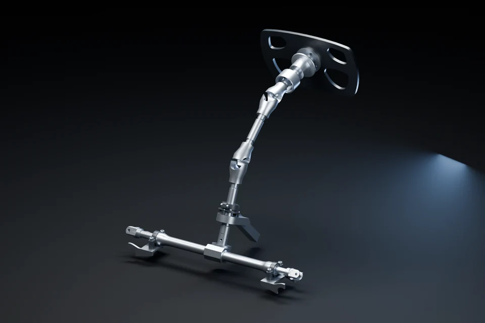
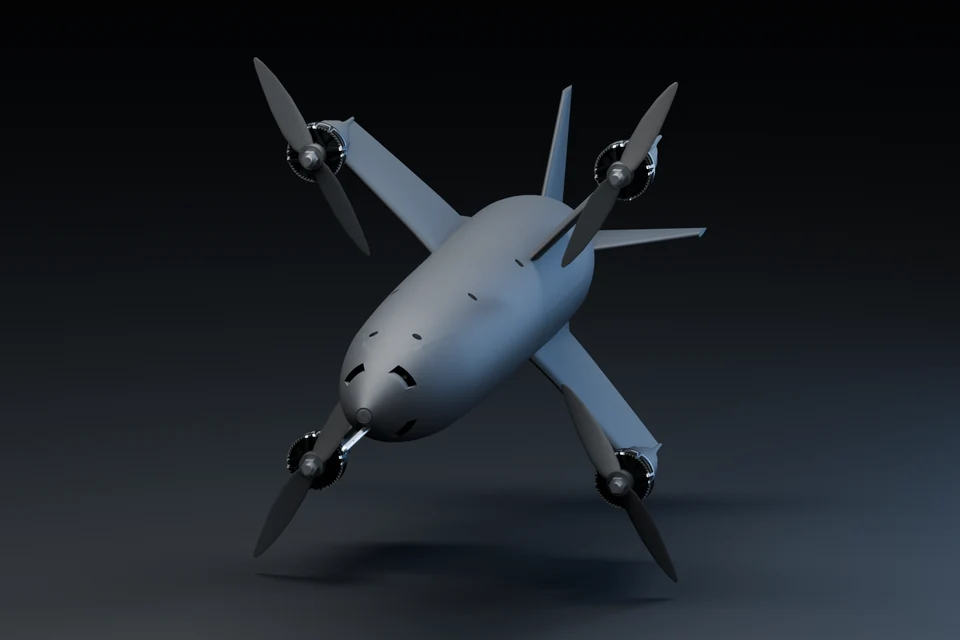
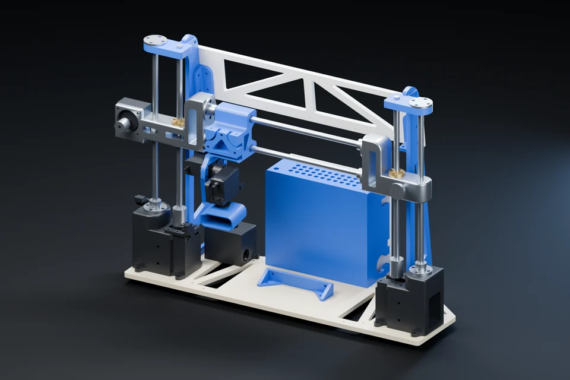
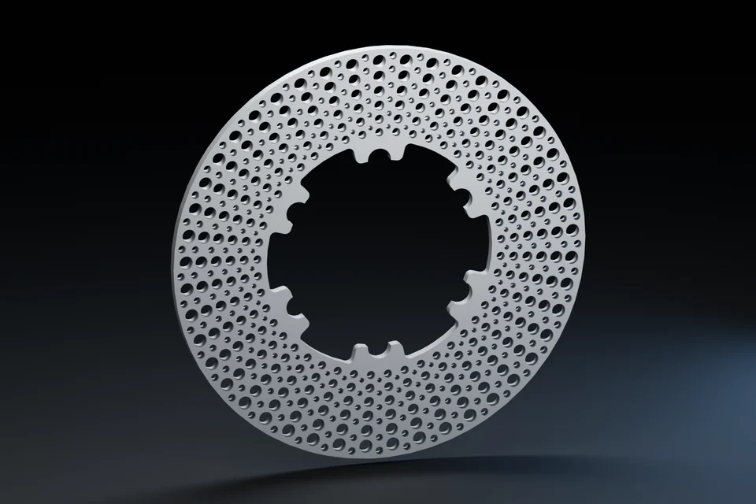
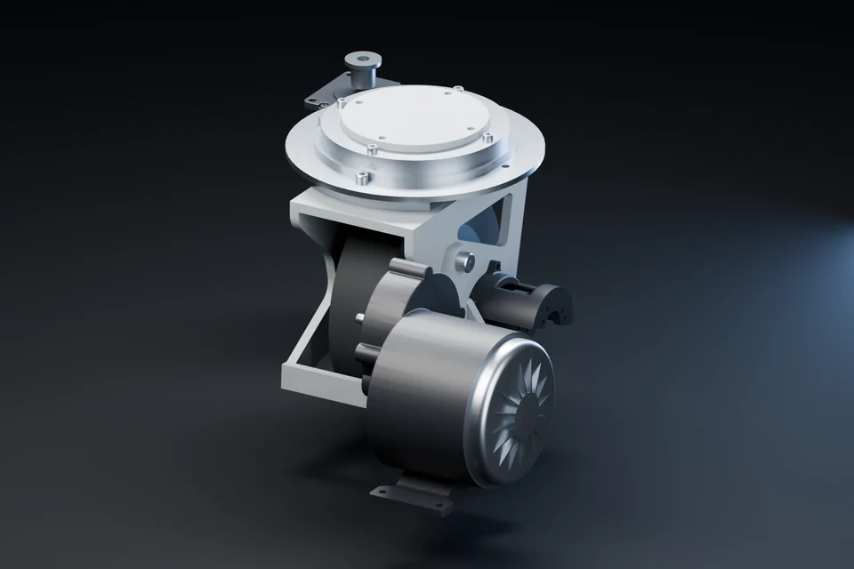
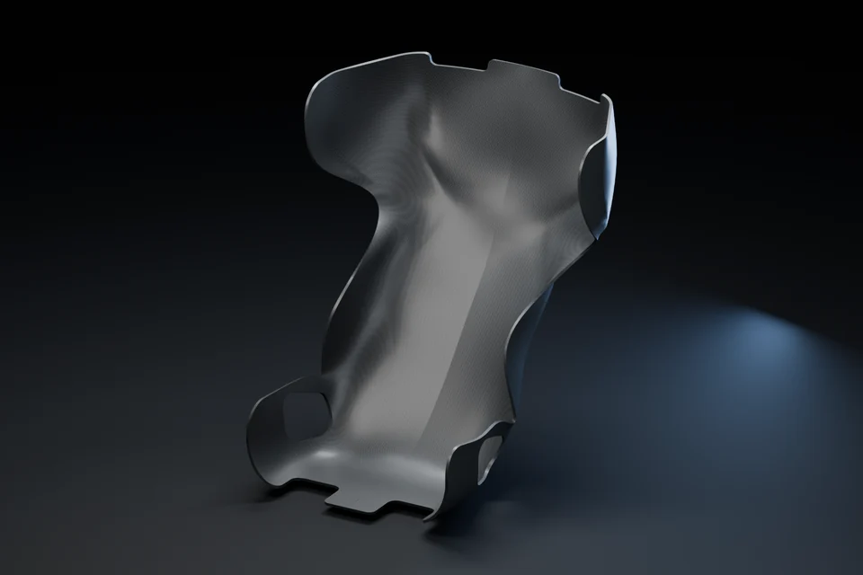
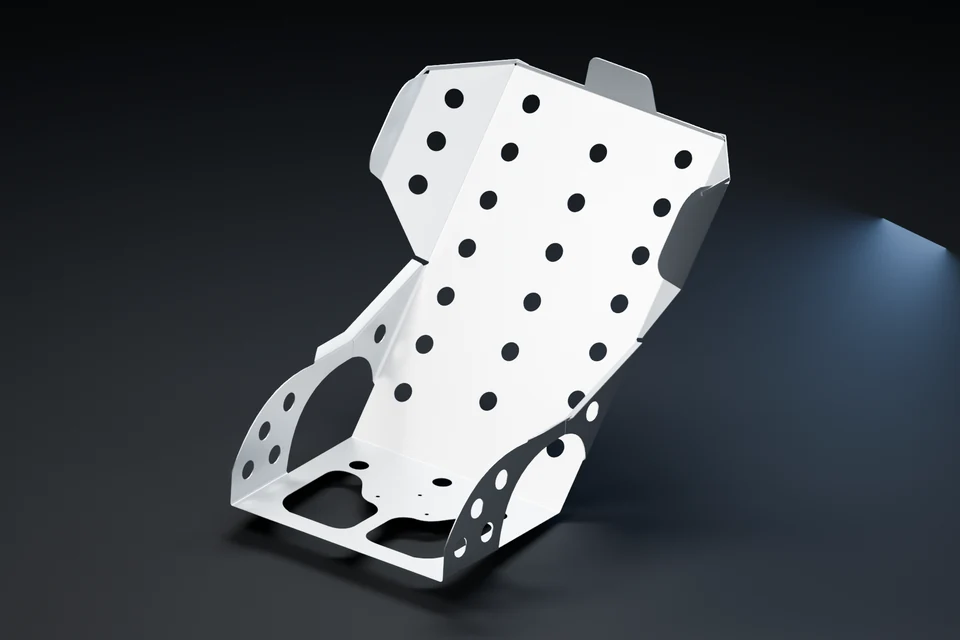
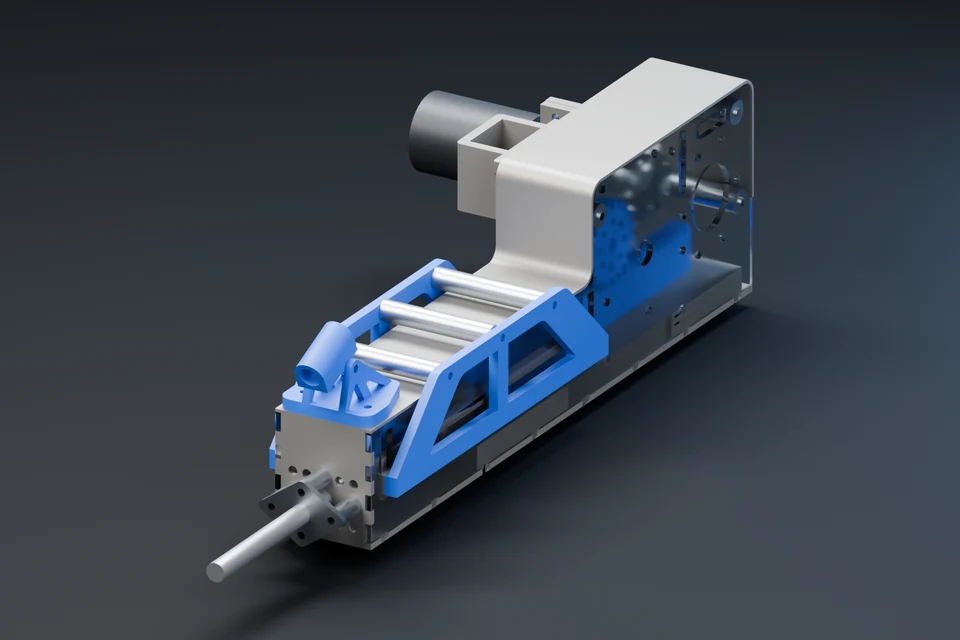
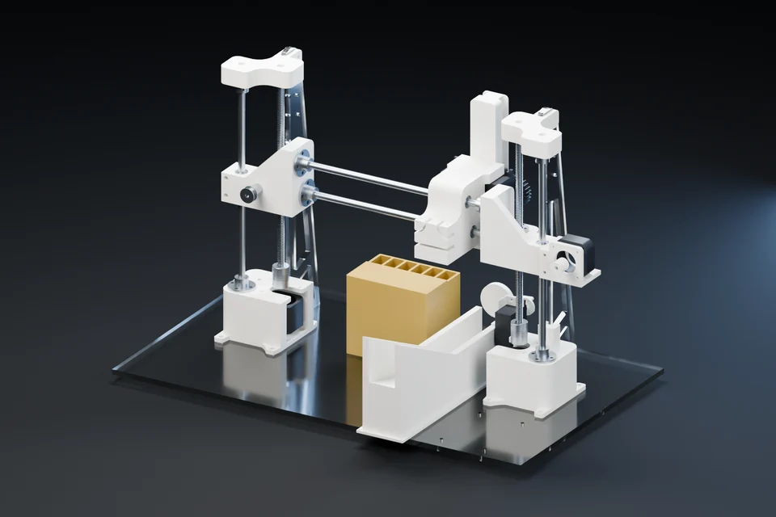
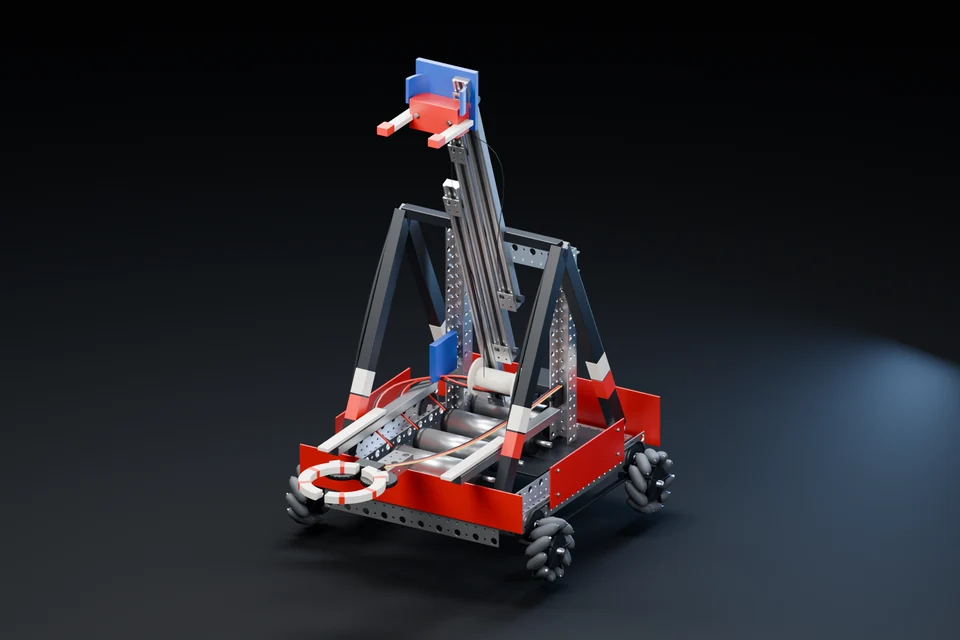

Designed, machined, and welded into Mk.8.

MECHANICAL ENGINEERING / OLIN ’28
Race-car systems. Robotics. Real hardware.
Designed, built, and tested.
01 / SELECTED WORK
Showing 16 of 16 projects

Designed, machined, and welded into Mk.8.

A reinforced pressure vessel for soft-robot research.

A 300 km/h design target. Flight controlled by differential thrust.

2,206 readings. From gantry motion to point cloud.

A 22-lap model supporting a 25% rotor mass-reduction target.

Independent swerve modules designed around a 300 lb payload.

A composite support shell built around driver loads.

Validated with ~20 drivers. A dedicated six-point harness mount.

30 specimens and 11 bending tests for a calibrated material model.


A laser-aimed cue launcher with adjustable pullback.

Sensors, controls, and power on a palm-size chassis.

A perfume-mixing machine, built and debugged in 2.5 days.

Walnut, maple, CNC machining, and working electronics.

A ~$100 kit. A playable guitar in about 45 minutes.

Intake, lift, and mecanum drive for a championship robot.
Studio renders for a closer look. Open a project for original build photos and technical results.
No matching projects. Try another search or category.
02 / HOW I WORK
Design decisions belong in the shop.
Test results belong in the next design.
Turn constraints into load cases, kinematics, and buildable assemblies.
SolidWorks · MATLAB · FEA · CFD
Thermal & structural modelingCarry tolerances, tooling, and assembly access from CAD to the finished part.
CNC · Lathe · TIG · Composites
From blank to finished buildUse calibrated sensors and physical tests to challenge the model.
Python · Arduino · Sensors · Testing
Calibration in practice
30 ENGINEERS. ONE RACE CAR.
I lead 30 mechanical engineers across four subteams, from design reviews and fabrication to vehicle integration. Previously, I led the cockpit: brakes, steering, and driver fit.
03 / LET’S BUILD SOMETHING
Seeking a Summer 2027 internship in
vehicle systems, robotics, or manufacturing.